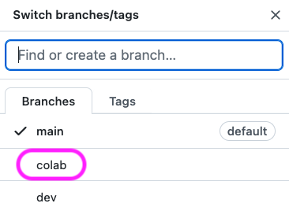

git ✨
*Lo que nunca te contaron y quizás sería por algo
Índice
- Introducción al control de versiones
- Preparación del entorno de desarrollo
- Flujo de trabajo
- Comandos en detalle
- Convenciones y buenas prácticas
¿Qué es el control de versiones?
~/work$ ls -l
procesa_datos_00.R
procesa_datos_01.R
procesa_datos_02.R
procesa_datos_03.R
procesa_datos_04.R
procesa_datos_05.R
procesa_datos_06.R
procesa_datos_07.R
procesa_datos_08.R
procesa_datos_09.R
procesa_datos_10.R
procesa_datos_11.R
procesa_datos_12.R
procesa_datos_13.R
procesa_datos_14.R
procesa_datos_15.R
procesa_datos_16.R
procesa_datos_17.R
procesa_datos_18.R
procesa_datos_19.R
procesa_datos_20.R
~/work$ tree
.
├── cambios
│  ├── arregla_error1
│  ├── arreglando_procesa
│  ├── mejora_funcionalidad
│  ├── nuevo_problema
│  └── soluciona_bug
├── definitivo
│  ├── lanzamiento
│  ├── version_final
│  └── version_mejorada
└── pruebas
├── pruebas_antes
├── pruebas_despues
└── pruebas_final
14 directories, 0 files

“Se llama control de versiones a la gesti√≥n de los diversos cambios que se realizan sobre los elementos de algún producto o una configuraci√≥n del mismo. Una versi√≥n, revisi√≥n o edici√≥n de un producto, es el estado en el que se encuentra el mismo en un momento dado de su desarrollo o modificaci√≥n.”
Aclarando conceptos 1️⃣
Aclarando conceptos 2️⃣
SVN
- Centralizado
- Cliente/Servidor
- Offline limitado
- Más sencillo
- $\approx 23\%$
GIT
- Distribuido
- Cliente+Servidor
- Offline completo
- Más complejo
- $\approx 72\%$
Aclarando conceptos 2️⃣
SVN
GIT
Aclarando conceptos 3️⃣
repo = repositorio
¿Por qué git?
- Histórico permanente de cambios.
- Copias de seguridad.
- Trabajo en equipo.
- Crear ramas y/o etiquetas.
- Enfoque social.
Índice
- Introducción al control de versiones
- Preparación del entorno de desarrollo
- Flujo de trabajo
- Comandos en detalle
- Convenciones y buenas prácticas
¿Tengo git instalado?
$ git --version
git version 2.32.0 (Apple Git-132)

Establecer credenciales
$ git config --global user.name "Sergio Delgado Quintero"
$ git config --global user.email "sdelquin@gmail.com"
üëáüèª Crea un archivo en $HOME/.gitconfig
[user]
name = Sergio Delgado Quintero
email = sdelquin@gmail.com
git init
Inicializar un repositorio
$ git init
Initialized empty Git repository in /Users/sdelquin/work/.git/
¿ .git ?
$ tree .git
.git
├── HEAD
├── config
├── description
├── hooks
│  ├── applypatch-msg.sample
│  ├── commit-msg.sample
│  ├── fsmonitor-watchman.sample
│  ├── post-update.sample
│  ├── pre-applypatch.sample
│  ├── pre-commit.sample
│  ├── pre-merge-commit.sample
│  ├── pre-push.sample
│  ├── pre-rebase.sample
│  ├── pre-receive.sample
│  ├── prepare-commit-msg.sample
│  ├── push-to-checkout.sample
│  └── update.sample
├── info
│  └── exclude
├── objects
│  ├── info
│  └── pack
└── refs
├── heads
└── tags
git clone
Clonar un repositorio
Vía $ssh$
$ git clone git@github.com:sdelquin/work.git
Cloning into 'work'...
remote: Enumerating objects: 4, done.
remote: Counting objects: 100% (4/4), done.
remote: Compressing objects: 100% (3/3), done.
Receiving objects: 100% (4/4), done.
remote: Total 4 (delta 0), reused 0 (delta 0), pack-reused 0
*Clave pública/privada
Vía $https$
$ git clone https://github.com/sdelquin/work.git
Cloning into 'work'...
remote: Enumerating objects: 4, done.
remote: Counting objects: 100% (4/4), done.
remote: Compressing objects: 100% (3/3), done.
Receiving objects: 100% (4/4), done.
remote: Total 4 (delta 0), reused 0 (delta 0), pack-reused 0
*Usuario y password
Clientes gráficos /free/
| Software | OS | Price |
|---|---|---|
| GitHub Desktop | üçé ü™ü üêß | 0 |
| SourceTree | üçé ü™ü | 0 |
| TortoiseGit | ü™ü | 0 |
| Git Extensions | üçé ü™ü üêß | 0 |
| GitKraken | üçé ü™ü üêß | 0* |
| Magit | üçé ü™ü üêß | 0 |
| MeGit | üçé ü™ü üêß | 0 |
| GitAhead | üçé ü™ü üêß | 0 |
| ungit | üçé ü™ü üêß | 0 |
Índice
- Introducción al control de versiones
- Preparación del entorno de desarrollo
- Flujo de trabajo
- Comandos en detalle
- Convenciones y buenas prácticas
Flujo de trabajo 1️⃣
Crear rama de desarrollo
$ git switch -c dev
✅
Flujo de trabajo 2️⃣
Hacer las modificaciones pertinentes
$ ...
✅
Flujo de trabajo 3️⃣
Ver el estado del repo
$ git status
✅
Flujo de trabajo 4️⃣
Preparar los cambios
$ git add .
✅
Flujo de trabajo 5️⃣
Confirmar los cambios
$ git commit -m "First commit"
✅
Flujo de trabajo 6️⃣
Subir cambios al servicio web
$ git push
✅
Índice
- Introducción al control de versiones
- Preparación del entorno de desarrollo
- Flujo de trabajo
- Comandos en detalle
- Convenciones y buenas prácticas
Punto de partida
☁️ https://github.com/sdelquin/work.git
$ git clone git@github.com:sdelquin/work.git # ssh
$ cd work
$ ls
LICENSE README.md
git status
Comprobando el estado del repositorio
git status
$ git status
On branch main
Your branch is up to date with 'origin/main'.
nothing to commit, working tree clean
git status
Modificamos README.md üë∑ü誂Äç‚ôÄÔ∏è
$ git status
On branch main
Your branch is up to date with 'origin/main'.
Changes not staged for commit:
(use "git add [file]..." to update what will be committed)
(use "git restore [file]..." to discard changes in working directory)
modified: README.md
no changes added to commit (use "git add" and/or "git commit -a")
Estados de un archivo en git

Estados de un archivo en git
-
ignored$\Rightarrow$ ignorado -
tracked$\Rightarrow$ con seguimiento -
untracked$\Rightarrow$ sin seguimiento -
modified$\Rightarrow$ modificado -
staged$\Rightarrow$ preparado-
git add$\rightarrow$ preparar
-
-
committed$\Rightarrow$ confirmado-
git commit$\rightarrow$ confirmar
-
git add
Preparando los cambios
git add
$ git add README.md
$ git status
On branch main
Your branch is up to date with 'origin/main'.
Changes to be committed:
(use "git restore --staged [file]..." to unstage)
modified: README.md
⚡ git add .
git commit
Confirmando los cambios
git commit
$ git commit -m "Add welcome message"
[main ae0abb3] Add welcome message
1 file changed, 1 insertion(+)
$ git status
On branch main
Your branch is ahead of 'origin/main' by 1 commit.
(use "git push" to publish your local commits)
nothing to commit, working tree clean
✳️ Si no se especifica la opción -m el comando pedirá
el mensaje de commit con un editor.
Me olvidé de incluir un cambio en el último commit
üí° ¡Hay soluci√≥n!
git commit --amend
- Haz los cambios que necesites üë∑ü誂Äç‚ôÄÔ∏è
-
Prepara y confirma los cambios
$ git add . $ git commit --amend (-m) -
Opción "desatentida"
$ git add . $ git commit --amend --no-edit
git restore
El CTRL-Z de toda la vida
git restore
Escenario 1: Hemos modificado
README.md pero está aún sin preparar
$ git status
On branch main
Your branch is up to date with 'origin/main'.
Changes not staged for commit:
(use "git add [file]..." to update what will be committed)
(use "git restore [file]..." to discard changes in working directory)
modified: README.md
no changes added to commit (use "git add" and/or "git commit -a")
$ git restore README.md
$ git status
On branch main
Your branch is up to date with 'origin/main'.
nothing to commit, working tree clean
git restore
Escenario 2: Hemos modificado
README.md y lo hemos preparado
$ git status
On branch main
Your branch is up to date with 'origin/main'.
Changes to be committed:
(use "git restore --staged [file]..." to unstage)
modified: README.md
$ git restore --staged README.md
$ git restore README.md
$ git status
On branch main
Your branch is up to date with 'origin/main'.
nothing to commit, working tree clean
⚡ git restore .
git clean
Borrando archivos sin seguimiento
git clean
Escenario üèñÔ∏è
$ git status
On branch main
Your branch is up to date with 'origin/main'.
Untracked files:
(use "git add [file]..." to include in what will be committed)
process.C
upload.C
nothing added to commit but untracked files present (use "git add" to track)
Borrado üóëÔ∏è
$ git clean -i
Would remove the following items:
process.C upload.C
*** Commands ***
1: clean 2: filter by pattern
3: select by numbers 4: ask each
5: quit 6: help
What now> 4
Remove process.C [y/N]? y
Remove upload.C [y/N]? y
Removing process.C
Removing upload.C
⚡ git clean -f
Ramas
git branch
Gestionando las ramas
git branch 1️⃣
Ramas locales üéã
$ git branch
* main
Ramas remotas ☁️
$ git branch -r
origin/main
Todas las ramas üå¥
$ git branch -a
* main
remotes/origin/main
Todos los detalles üîç
$ git branch -avv
* main 788a2d7 [origin/main] Initial commit
remotes/origin/main 788a2d7 Initial commit
git branch 2️⃣
Crear ramas üöÄ
$ git branch dev
$ git branch feat
$ git branch
dev
feat
* main
Borrar ramas üóëÔ∏è
$ git branch -d dev
Deleted branch dev (was ae0abb3).
$ git branch -d feat
Deleted branch feat (was ae0abb3).
$ git branch
* main
git remote
Gestionando las direcciones remotas
git remote
$ git remote -v
origin git@github.com:sdelquin/work.git (fetch)
origin git@github.com:sdelquin/work.git (push)
git remote
Modificando remotos üë∑üèª
Vía git
-
git remote add -
git remote remove
V√≠a .git/config ü•∑üèª
[core]
repositoryformatversion = 0
filemode = true
bare = false
logallrefupdates = true
ignorecase = true
precomposeunicode = true
[remote "origin"]
url = git@github.com:sdelquin/work.git
fetch = +refs/heads/*:refs/remotes/origin/*
[branch "main"]
remote = origin
merge = refs/heads/main
[branch "dev"]
remote = origin
merge = refs/heads/dev
git switch
Cambiando* a otras ramas
git switch
$ git branch
* main
$ git switch -c blue
Switched to a new branch 'blue'
$ git branch
* blue
main

$ git switch -c red
Switched to a new branch 'red'
$ git branch
blue
main
* red
$ git switch main
Switched to a new branch 'main'
$ git switch -c blue
Switched to a new branch 'blue'
$ git switch -c red
Switched to a new branch 'red'
$ git status
blue
main
* red
$ git switch blue
$ git commit
$ git commit
$ git switch -c green
$ git commit
$ git switch red
$ git commit
$ git commit
$ git commit
git push
Subiendo los cambios al "upstream"
git push ✅
$ git push
Enumerating objects: 5, done.
Counting objects: 100% (5/5), done.
Delta compression using up to 8 threads
Compressing objects: 100% (2/2), done.
Writing objects: 100% (3/3), 340 bytes | 340.00 KiB/s, done.
Total 3 (delta 0), reused 0 (delta 0), pack-reused 0
To github.com:sdelquin/work.git
bdede5e..ae0abb3 main -> main
$ git branch -vv
* main ae0abb3 [origin/main] Add welcome message
git push ❌
$ git switch -c dev
Switched to a new branch 'dev'
$ git push
fatal: The current branch dev has no upstream branch.
To push the current branch and set the remote as upstream, use
git push --set-upstream origin dev
üò®
$ git branch -vv
* dev ae0abb3 Add welcome message
main ae0abb3 [origin/main] Add welcome message
git push
$ git push -u origin dev
Total 0 (delta 0), reused 0 (delta 0), pack-reused 0
remote:
remote: Create a pull request for 'dev' on GitHub by visiting:
remote: https://github.com/sdelquin/work/pull/new/dev
remote:
To github.com:sdelquin/work.git
* [new branch] dev -> dev
Branch 'dev' set up to track remote branch 'dev' from 'origin'.
-u $\Leftrightarrow$
--set-upstream
$ git branch -vv
* dev ae0abb3 [origin/dev] Add welcome message
main ae0abb3 [origin/main] Add welcome message
git merge
Mezclando cambios desde otra rama
git merge ✅
$ git switch dev
$ # edit README.md
$ git add .
$ git commit -m "New notes"
$ git switch main
$ git merge dev --no-edit
Merge made by the 'recursive' strategy.
README.md | 1 +
1 file changed, 1 insertion(+)
git merge ❌
$ git switch dev
$ # Editamos L2 de README.md: "Hola"
$ git add .
$ git commit -m "Say hola"
$ git switch main
$ # Editamos L2 de README.md: "Hallo"
$ git add .
$ git commit -m "Say hallo"
$ git merge dev --no-edit
Auto-merging README.md
CONFLICT (content): Merge conflict in README.md
Automatic merge failed; fix conflicts and then commit the result.
üò±üò±üò±
git merge
Resolviendo el conflicto ü•ä
README.md
# work
<<<<<<< HEAD
Hallo
||||||| 8f1e81f
=======
Hola
>>>>>>> dev
Just for testing purposes
Hello World!
Changes from dev branch
Keep on working
README.md
# work
Hola
Just for testing purposes
Hello World!
Changes from dev branch
Keep on working
git merge
Resolviendo el conflicto ü•ä
$ git status
On branch main
Your branch is ahead of 'origin/main' by 3 commits.
(use "git push" to publish your local commits)
You have unmerged paths.
(fix conflicts and run "git commit")
(use "git merge --abort" to abort the merge)
Unmerged paths:
(use "git add [file]..." to mark resolution)
both modified: README.md
no changes added to commit (use "git add" and/or "git commit -a")
$ git add README.md
$ git commit -m "Fix conflict"
[main 101d7fb] Fix conflict
1 file changed, 1 insertion(+), 1 deletion(-)
git pull
Actualizando los cambios remotos
git pull
$ git switch dev
$ # edit README.md
$ git add .
$ git commit
$ git push

$ git switch main
$ git pull
PR · Pull Request


MR · Merge Request

git pull
$\Leftrightarrow$
git fetch $+$
git merge

git fetch
Descargando todo lo nuevo
Formas de /colaborar/ en un repo
-
Con permisos de escritura
$(\mathcal{A})$
- Miembros del equipo
-
Sin permisos de escritura
$(\mathcal{B})$
- Personal externo
Colaborando $(\mathcal{A})$
Colaborador üßëü誂Äçüîß
$ # git clone ...
$ git switch -c colab
$ # edit README.md
$ git add .
$ git commit -m "Help from teammate"
$ git push origin colab
¡Nueva rama remota!
Colaborando $(\mathcal{A})$
üôãü誂Äç‚ôÄÔ∏è
$ git branch -avv
dev 3149c76 [origin/dev] Work in progress
* main 7c3682f [origin/main] Add sum
remotes/origin/dev 3149c76 Work in progress
remotes/origin/main 7c3682f Add sum
$ git fetch
remote: Enumerating objects: 5, done.
remote: Counting objects: 100% (5/5), done.
remote: Compressing objects: 100% (2/2), done.
remote: Total 3 (delta 1), reused 3 (delta 1), pack-reused 0
Unpacking objects: 100% (3/3), 353 bytes | 88.00 KiB/s, done.
From github.com:sdelquin/work
* [new branch] colab -> origin/colab
$ git branch -avv
dev 3149c76 [origin/dev] Work in progress
* main 7c3682f [origin/main] Add sum
remotes/origin/colab 46b7b56 Help from teammate
remotes/origin/dev 3149c76 Work in progress
remotes/origin/main 7c3682f Add sum
$ git switch colab
Branch 'colab' set up to track remote branch 'colab' from 'origin'.
Switched to a new branch 'colab'
ü™Ñ
$ git branch -avv
* colab 46b7b56 [origin/colab] Help from outside
dev 3149c76 [origin/dev] Work in progress
main 7c3682f [origin/main] Add sum
remotes/origin/colab 46b7b56 Help from teammate
remotes/origin/dev 3149c76 Work in progress
remotes/origin/main 7c3682f Add sum
Colaborando $(\mathcal{B})$
Colaborador üë®ü誂Äçüíº $\Rightarrow$ Copia* del repo

Colaborando $(\mathcal{B})$
üë®ü誂Äçüíº
$ git clone git@github.com:euribates/work.git
$ git switch -c examples-proposal
$ # edit README.md
$ # add examples.md
$ git add .
$ git commit -m "A new samples page"
$ git push origin examples-proposal
$ # Create PR
Colaborando $(\mathcal{B})$
üôãü誂Äç‚ôÄÔ∏è
$ git branch -avv
dev 3149c76 [origin/dev] Work in progress
* main 7c3682f [origin/main] Add sum
remotes/origin/dev 3149c76 Work in progress
remotes/origin/main 7c3682f Add sum
$ git remote add euribates git@github.com:euribates/work.git
$ git remote -v
euribates git@github.com:euribates/work.git (fetch)
euribates git@github.com:euribates/work.git (push)
origin git@github.com:sdelquin/work.git (fetch)
origin git@github.com:sdelquin/work.git (push)
$ git fetch euribates examples-proposal
From github.com:euribates/work
* branch examples-proposal -> FETCH_HEAD
* [new branch] examples-proposal -> euribates/examples-proposal
$ git remote -v | grep euribates
euribates/examples-proposal
$ git switch examples-proposal
Branch 'examples-proposal' set up to track remote branch
'examples-proposal' from 'euribates'.
Switched to a new branch 'examples-proposal'
$ git status
On branch examples-proposal
Your branch is up to date with 'euribates/examples-proposal'.
nothing to commit, working tree clean
$ ls
LICENSE README.md examples.md sum.py
$ # edit examples.md
$ git add .
$ git commit -m "PR checked"
$ git push
# ...
To github.com:euribates/work.git
916c79c..48bfdf2 examples-proposal -> examples-proposal
git stash
Almacenando temporalmente los cambios
git stash
$ git status
On branch main
Your branch is up to date with 'origin/main'.
Changes not staged for commit:
(use "git add [file]..." to update what will be committed)
(use "git restore [file]..." to discard changes in working directory)
modified: README.md
Untracked files:
(use "git add [file]..." to include in what will be committed)
config.py
no changes added to commit (use "git add" and/or "git commit -a")
$ git stash -u
Saved working directory and index state WIP on main:
c18e3f7 Merge branch 'main' of github.com:sdelquin/work
-u = --include-untracked
$ git status
On branch main
Your branch is up to date with 'origin/main'.
nothing to commit, working tree clean
$ git stash pop
On branch main
Your branch is up to date with 'origin/main'.
Changes not staged for commit:
(use "git add [file]..." to update what will be committed)
(use "git restore [file]..." to discard changes in working directory)
modified: README.md
Untracked files:
(use "git add [file]..." to include in what will be committed)
config.py
no changes added to commit (use "git add" and/or "git commit -a")
Dropped refs/stash@{0} (eb45cfdc63836cbc6417c358780ba55722c795b3)
git log
Mostrando el historial de cambios
git log
$ git log --pretty=oneline --abbrev-commit
c18e3f7 (HEAD -> main) Merge branch 'main' of github.com:sdelquin/work
1705ee9 (origin/main) Merge pull request #2 from sdelquin/dev
3149c76 (origin/dev, dev) Work in progress
101d7fb Fix conflict
24c1201 Say hallo
66c4e10 Say hola
aa94f74 Merge branch 'dev'
8f1e81f New notes
e44f857 Merge pull request #1 from sdelquin/dev
e8983c7 More changes
ae0abb3 Add welcome message
bdede5e Initial commit
$ git shortlog
Sergio Delgado Quintero (13):
Initial commit
Add welcome message
More changes
Merge pull request #1 from sdelquin/dev
New notes
Merge branch 'dev'
Say hola
Say hallo
Fix conflict
Work in progress
Merge pull request #2 from sdelquin/dev
Merge branch 'main' of github.com:sdelquin/work
git diff
Encontrando diferencias
git diff
README.md
# work
Hola
Just for testing purposes
Hello World!
Changes from dev branch
Keep on working
Work in progress
README.md
# work
Hola
Just for testing purposes
Ciao Mondo!
Changes from dev branch
Keep on working
Work in progress
$ git diff
diff --git a/README.md b/README.md
index 4ed5232..bb48069 100644
--- a/README.md
+++ b/README.md
@@ -1,7 +1,7 @@
# work
Hola
Just for testing purposes
-Hello World!
+Ciao Mondo!
Changes from dev branch
Keep on working
Work in progress
git tag
Etiquetando versiones
git tag
$ vi sum.py # nueva funcionalidad
$ git add sum.py
$ git commit -m "Add sum"
$ git tag -a 1.0.0 -m "Release version 1.0.0"
$ git tag
1.0.0
☁️ Versionado semántico
⚡ git push --follow-tags
git blame
Buscando culpables responsables
git blame
$ git blame README.md
^bdede5e (Sergio Delgado Quintero 2022-05-05 09:58:55 +0100 1) # work
66c4e102 (Sergio Delgado Quintero 2022-05-06 13:42:19 +0100 2) Hola
^bdede5e (Sergio Delgado Quintero 2022-05-05 09:58:55 +0100 3) Just for testing purposes
ae0abb3a (Sergio Delgado Quintero 2022-05-05 12:51:16 +0100 4) Hello World!
e8983c79 (Sergio Delgado Quintero 2022-05-06 13:12:55 +0100 5) Changes from dev branch
8f1e81f6 (Sergio Delgado Quintero 2022-05-06 13:18:48 +0100 6) Keep on working
3149c76f (Sergio Delgado Quintero 2022-05-06 18:59:57 +0100 7) Work in progress
Y una lista /enorme/ de comandos... ü§Ø
Índice
- Introducción al control de versiones
- Preparación del entorno de desarrollo
- Flujo de trabajo
- Comandos en detalle
- Convenciones y buenas prácticas
Estructura /mínima/ del repo
README.mdLICENSE$\Rightarrow$ AGPL3CHANGELOG.gitignore
CHANGELOG
# Changelog
All notable changes to this project will be documented in this file.
## [Unreleased]
## [1.0.0] - 2017-06-20
### Added
- New visual identity by [@tylerfortune8](https://github.com/tylerfortune8).
- Links to latest released version in previous versions.
- Version navigation. [#141](https://github.com/foo/bar/issues/141)
### Changed
- Start using "changelog" over "change log" since it's the common usage.
- Rewrite "What makes unicorns cry?" section.
### Removed
- Section about "changelog" vs "CHANGELOG".
CHANGELOG
☁️ https://keepachangelog.com/
.gitignore
-
supersecret.dat -
*.log -
**/output/*.obj -
/env -
cache -
cache/ -
!cache/important.txt
☁️ https://www.atlassian.com/es/git/tutorials/saving-changes/gitignore
Lo que /no/ debería estar en el repo
-
Contraseñas o credenciales:
.env
-
Archivos generados:
/node_modules /packages*.pyc *.class/bin /out /target*.log *.lock *.tmp
-
Archivos multimedia:
.DS_Store Thumbs.db.artwork
-
Archivos configuración IDE:
.idea.vscode
Buenas prácticas en commits
- Commit $ \begin{cases} \text{Tarea general} \\ \text{Línea en blanco} \\ \text{Cambios aplicados} \end{cases} $
- No usar rutas absolutas
- Mantener estado funcional tras commit
- Commits atómicos
- Commits formato $\neq$ funcionalidad
- üá∫üá∏ vs üá™üá∏
- Etiquetado de versiones
Indicaciones a nivel de código
- Escribir c√≥digo en üá∫üá∏
#TODO- No usar rutas absolutas
- Código transversal $\Rightarrow$ Paquete
- Hardcodear $\Rightarrow$ Configuraciones
GitLab corporativo
ETL
üìÇ ETL Operacionales
üìÇ 080.010 Comercio (1)
üìÇ E30103A Indices de Comercio al por Menor (2)
⭐ E30103A-MDS2MDS-PC0001-V0.1
üìÇ ETL Transversales
üìÇ PROCESA Procesamiento de datos y análisis de resultados (3)
üìÇ GSBPM6.1.2 Ejecutar ajustes estacionales-efecto calendario (4)
⭐ GSBPM6.1.2-PC0001-V0.1
GitLab corporativo
Software
üìÇ Sistema de gesti√≥n de ETL
⭐ coetl
⭐ ETL Launcher
GitLab corporativo
URL
https://www.gobiernodecanarias.net
└─ /aplicaciones/git/istac/
└─ /etl/operacionales/080.010-comercio/e30103a/
└─ e30103a-mds2mds-pc0001-v0.1
https://www.gobiernodecanarias.net/aplicaciones/git/istac/etl/operacionales/080.010-comercio/e30103a/e30103a-mds2mds-pc0001-v0.1
Referencias üßê
¡Gracias! üéâ

Powered by